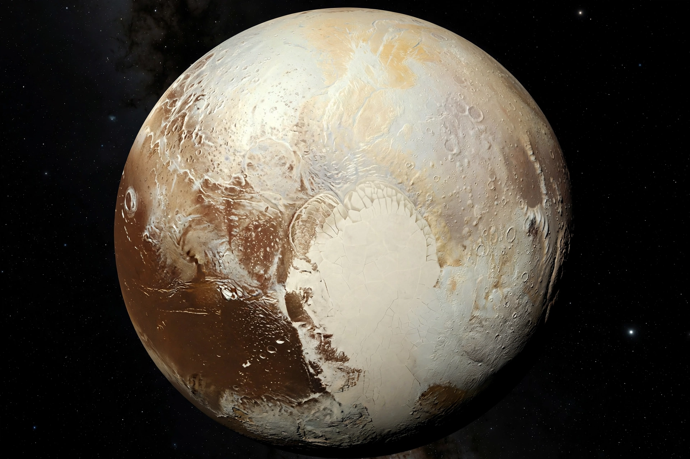

Dwarf planet

[Image: Pluto as seen by New Horizons — a tan and cream world with a great heart-shaped glacier (Sputnik Planitia)]A dwarf planet is a small planetary-mass object that is in direct orbit of the Sun, is massive enough for its shape to be in hydrostatic equilibrium (nearly round), has not cleared the neighbourhood around its orbit, and is not a satellite. The category was defined by the International Astronomical Union in 2006, in the decision that reclassified Pluto — the most famous dwarf planet — from the ninth planet to this new class.
The IAU officially recognises five dwarf planets: Ceres (in the Asteroid belt), Pluto, Haumea, Makemake and Eris (in the Kuiper belt beyond Neptune); dozens more candidate objects, such as Sedna, Orcus and Quaoar, are known to astronomers.
The 2006 debate
The discovery of Eris in 2005, an object comparable in size to Pluto (and initially thought larger), forced the question of whether it should become the tenth planet or Pluto should be demoted. The IAU's Prague vote defined 'planet' to exclude both — a decision still debated by some planetary scientists, who prefer a geophysical definition based on roundness alone.
Spacecraft have visited two dwarf planets: NASA's Dawn orbited Ceres from 2015, and New Horizons flew past Pluto in July 2015, revealing glaciers, mountains of water ice and a thin nitrogen atmosphere far richer than expected for a 'demoted' world.